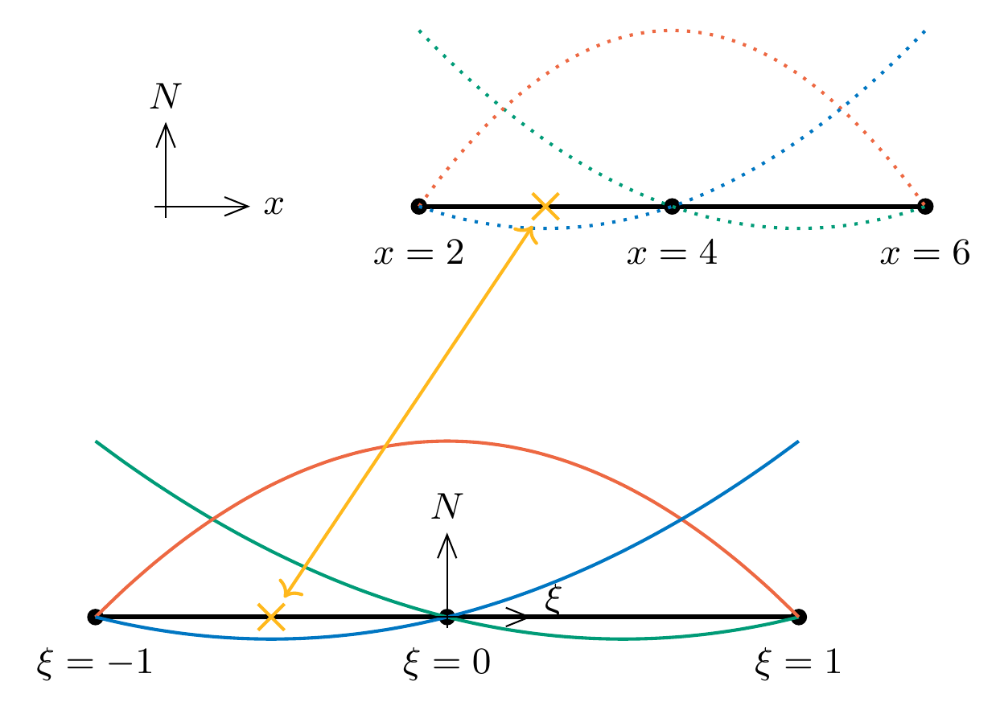
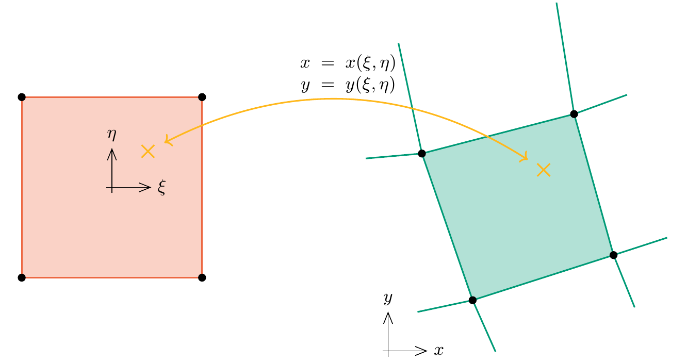
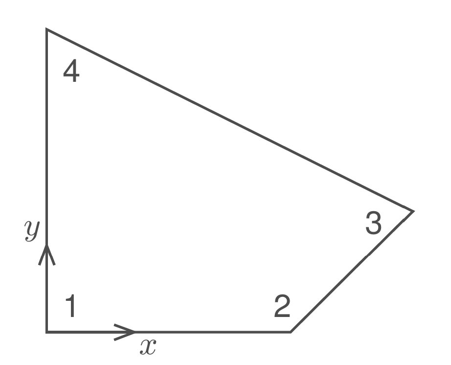

\(\newcommand{\pder}[2]{\frac{\partial #1}{\partial #2}}\) \(\newcommand{\hpder}[2]{\displaystyle\frac{\partial #1}{\partial #2}}\)
2.8. Isoparametric mapping#
MUDE exam information
The contents of this page are not part of the MUDE exam. It is included in the textbook to provide additional information about the finite element method.
After introducing the first 2D finite element formulations, it is necessary to give some more attention to how finite element matrices are in practice evaluated. We have not given much attention to the formulation of shape functions and numerical integration. In Chapter 1 you have seen a simple 1D implementation with linear elements, where definition of shape functions and evaluation of element integrals is relatively straightforward. In general, for 2D or 3D elements, particularly when unstructured meshes need to be supported, this becomes more complicated. Most popular finite element codes make use of the same technique that relates to the definition of integration schemes and the definition of the shape functions, this technique is called isoparametric mapping.
The basic motivation is that we want to define shape functions and the integration scheme on a so-called reference element and that we want to use this same definition of shape functions and integration scheme for any element in a mesh, irrespective of its position and orientation.
Isoparametric mapping on a 3-node line element#
We will start illustrating the principle of isoparametric mapping with a 3-node line element. In principle, shape functions can be defined globally. For instance for the quadratic line element in 1D, we can state that all shape functions should have the form of a quadratic polynomial
with coefficients \(a_i\), \(b_i\) and \(c_i\), where \(i\) refers to the node number the shape function is associated with. We know \(N_i\) should be equal to 1 at node \(i\) and equal to 0 at the other two nodes. Then, if we have an element with three nodes with certain coordinates, that gives three equations for every shape function, which can be solved for the three coefficients. However, in practice \(N_i(x)\) is not explicitly defined in implementations of the finite element method. The shape functions are defined instead on a reference element, which is the same for all elements in the mesh.
The reference element#
This reference element is defined in an auxiliary coordinate system, the natural coordinates of the element. In 1D, we use a \(\xi\) as symbol for the natural coordinate. The reference element is defined on the domain \(\xi\in[-1,1]\). We can define the shape functions here, with nodes at \(\xi=-1\), \(\xi=0\) and \(\xi=1\), the quadratic shape functions that satisfy the Kronecker delta property are given as:
Show that the shape functions given above satisfy the partition of unity property and the Kronecker delta property (see chapter 1)
Note that the weights given for numerical integration in chapter 1, for instance with two point Gauss integration at \(\xi = -1/\sqrt{3}\) and \(\xi = 1/\sqrt{3}\) with \(w_1=w_2=1\) is directly suitable for this reference element. However, in a finite element model, where we have multiple elements, we need to perform integration over the actual domain of the elements. Moreover, in most models we will need the derivatives of the shape functions, and these are derivatives with respect to global coordinates.
Requirements for the mapping#
In order to be able to use the reference element for evaluation of these shape function derivatives and for performing numerical integration, we need a relationship between the actual coordinates \(x\) of any physical element and the natural coordinates \(\xi\) of the reference element.
In general, if we have an element defined over \(x\in[a,b]\), we need to evaluate perform numerical integration from \(x=a\) to \(x=b\). It is possible to rewrite an integral of any function \(f(x)\) over the element as an integral over the reference element as:
Addtionally, for evaluating the derivatives of shape functions, if the shape functions are defined in terms of \(\xi\) but we need derivatives with respect to \(x\), the operation we need is:
In both of these operations, a relation between \(x\) and \(\xi\) is needed. A relationship between two coordinate systems is called a mapping.
How the mapping is constructed#
For the 1D element, it is quite simple to construct a linear mapping between \(x\) and \(\xi\), but with isoparametric mapping we will take an approach that can generalize well to higher dimensionality. In isoparametric mapping, we define \(x(\xi)\) as the sum over all nodes of \(N_i\) times the nodal coordinate \(x_i\):
What mapping do you obtain with the reference shape functions given above for an element with nodal coordinates \(x_1=2\), \(x_2=4\) and \(x_3=6\)?
{kind=link}

Fig. 2.17 Example of isoparametric mapping for a 3-node line element#
Solution
\(x=4+2\xi\)
Can you think of any sanity checks whether this results makes sense?
Solution
Substitution of nodal coordinates in the reference element gives the physical coordinates of the nodes
Also, the length of the element in physical domain is 4, while in the reference domain it has length 2. The difference is a factor 2. The scale factor of the length appears in the integral over the reference domain as the factor \(\left|\pder{x}{\xi}\right|\), which indeed evaluates to 2.
The term isoparametric refers to the fact that the mapping of coordinates is parametrized in the same way as we have parametrized the unknown field, namely with shape functions and nodal values.
The Jacobian#
The term \(\pder{x}{\xi}\) is referred to as the Jacobian of the mapping. It follows from the definition in Equation~(2.28) that this derivative can be evaluated for an element with given nodal coordinates \(x_i\) as:
For the example from the previous exercise, compute the Jacobian \(\pder{x}{\xi}\) following the definition above.
Solution
Of course it is possible to take a direct derivative from the mapping found in the previous exercise, but here we use the formal approach
The result here is independent of \(\xi\). Upon inspection of the performed operation it can be observed that this is the case if and only if \(x_2=\frac12(x_1+x_3)\), i.e. if the mid-node of the physical element is positioned exactly at the middle of the element domain.
The Jacobian itself is immediately what is needed to perform the numerical integration over the reference domain. For evaluation of shape function derivatives, we need \(\pder{\xi}{x}\), which is the inverse of the Jacobian. Introducing the symbol \(J\) for the Jacobian, we can write:
and
Isoparametric mapping in higher dimensions#
Isoparametric has been illustrated above for the case of 1D. It deserves to be said, however, that if there were only finite elements in 1D, the concept of isoparametric mapping would likely not be widespread. The approach really shines in higher dimensions, particularly on unstructured meshes. As an example, take the arbitrarily oriented quadrilateral element shown below.
{kind=link}

Fig. 2.18 Example of isoparametric mapping for a 4-node quadrilateral element: reference quad (left) and physical counterpart (right)#
There are now two natural coordinates \(\xi\) and \(\eta\). The reference quad is defined over the domain \((\xi\in[-1,1],\eta\in[-1,1])\) and its physical counterpart is arbitrarily positioned in 2D space with nodal coordinates \((x_i,y_i),\ i=1\ldots4\). Shape functions are defined once and for all for the reference element as:
The \((\xi,\eta)\)-coordinates of any point inside the reference element are mapped to \((x,y)\)-coordinates in physical space through a mapping:
The Jacobian is now a matrix, there are \(2\times2\) derivatives of physical coordinates with respect to natural coordinates:
The inverse of the Jacobian matrix takes the place of \(\frac1J\) in the calculation of shape function derivatives with respect to \(x\) and \(y\):
Numerical integration of a quantity \(f\) over the element domain \(\Omega^\mathrm{e}\) is performed over the reference element, now the correction involves the determinant of the Jacobian matrix
with \(\left|\mathbf{J}\right|=\det{\mathbf{J}}\). Now the integral on the right can be evaluated with numerical integration. This means that position of the integration points for numerical integration can be defined once and for all in the reference element, irrespective of the size and orientation of the element in physical space. The factor \(\left|\mathbf{J}\right|\), which does depend on the coordinates of the nodes corrects for the size of the actual element. Similarly, shape functions never need to be defined as function of \(x\) and \(y\). Only when we need their derivatives with respect to \(x\) and \(y\) is a transformation needed, which the \(\mathbf{J}^{-1}\) takes care of.
Consider a distorted quadrilateral element with nodal coordinates
{kind=link}

Fig. 2.19 4-node quadrilateral element in physical space#
Express \(x\) and \(y\) in terms of \(\xi\) and \(\eta\)
Evaluate the jacobian matrix \(\mathbf{J}\)
Solution
Coordinates are found with \(x=\sum_iN_ix_i\) and \(y=\sum_iN_iy_i\):
The Jacobian matrix is found by taking derivatives of the expressions for \(x\) and \(y\) that were just obtained, or by multiplying the coordinates with the shape function derivatives. For this exercise, the first of these two approaches is most convenient, but the second one is used in finite element implementations as shape function derivatives can be pre-evaluated and hard-coded. Both result in the same Jacobian matrix: